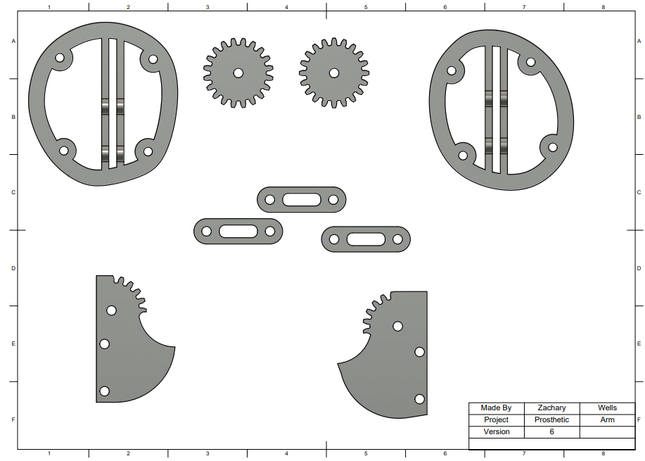

The objective of this project is to develop a prosthetic arm with a robotic elbow joint that is highly articulated. The arm should have a range of motion of 90 degrees to the left and right, as well as up and down. The goal is to create a basic prosthetic arm that utilizes motors or servos to allow for a limited range of motion. This project will design and create the prosthetic arm using a 3D Printer and CAD software. I show printed parts, and 3D models that show the full range of the design. This will showcase: 1. High Articulation: creating an elbow joint that can move fluidly and accurately in various directions set. 2. Range of Motion: The target is a 90-degree range in both the horizontal (left/right) and vertical (up/down) planes. 3. Basic Functionality: The initial design will be a simplified version, using motors or servos for movement.
 Learn moreIn the first stage of crafting a prosthetic arm, 3D scanning comes into play. This technology acts as a digital sculptor, capturing the intricate details of the residual limb. Unlike the traditional method of plaster casting, which can be uncomfortable and time-consuming, 3D scanning offers a swift and non-invasive approach. The resulting digital model accurately reflects the limb's unique contours, ensuring a perfect starting point for the prosthetic socket design. This precise information allows for customization that directly translates to improved comfort, fit, and, ultimately, function for the prosthetic user. The efficiency of 3D scanning also paves the way for faster turnaround times, allowing patients to receive their prosthetics sooner.
Learn moreThe development process revealed that for large-scale production of prosthetic arms, several considerations come into play. Material selection becomes critical, as industrial applications might require stronger, more durable materials like medical-grade plastics or metals, balancing weight, and strength. Manufacturing processes such as injection moulding or CNC machining would be more efficient for mass production compared to 3D printing. Rigorous testing and regulatory compliance are essential for industrial prosthetics to undergo extensive testing for safety, durability, and compliance with medical regulations, which would require specialized facilities and expertise.
Learn more3D Scanning Hardware
Obtaining a 3D scan of the residual limb is a crucial first step in designing a prosthetic socket that fits comfortably and securely. We use handheld scanners like Artec Eva, as this can capture 3D scans of the user's limb in minutes. Making this work efficiently requires a significant process, including: • Data Processing – Understanding the scanned data creates the virtual limb, allowing for the model to be manipulated and refined for accuracy, optimising the fit. • Socket Design – A digital model is used to design a custom-fit prosthetic socket. • Socker Fabrication – 3D printing now comes in with significant change from traditional CNC Machining. • Fitting & Alignment – Allowing for alignment to the patient's other components of the prosthesis. • Final Follow-up – ongoing adjustments and changes that may be required.
Computer-Aided Design (CAD) Software
CAD software designs prosthetic components, including the socket, joints, and attachment mechanisms. The 3D scan data is imported into CAD software to create a digital model that can be customised to fit the user's specific needs and desired functionality. CAD software can also test the design for strength and durability before it is printed. (For our purpose we used Autodesk Fusion, but this can be any computer-aided design software). The software also allows for changes to be made on an ongoing basis as the patient gets used to the new capability and fitting. The accuracy this software allows, along with the scanning (previously mentioned), gives much more precision and accuracy. The software, as shown, also allows for simulation and analysis, reducing the overall patient's discomfort. The data that is produced can also be reused by other patients. Reducing the overall costs and inconvenience to the patient.
3D Modeling Software (alternative to CAD)
For prosthetics that require more organic shapes or a more user-centric design approach, 3D modelling software can be used alongside or instead of CAD. This software provides more creative freedom in shaping the prosthetic and can create realistic, detailed models of the prosthetic components. In practice, the combination of both CAD and 3D modelling, with one informing the other. For instance, CAD refining what the 3D model has initially created will help with preparation for manufacturing. Examples of such products are: Solidworks, Fusion360, MeshMixer, and ReCap Photo.
Haptic Input Hardware & 3D Sculpting Software
Haptic input devices like haptic pens can be used with 3D sculpting software to refine the design and ensure a natural feel for the user. These tools allow the designer to manipulate the digital model in real-time, making creating complex shapes and contours that mimic the user's natural limb easier. Integrating haptic input hardware and 3D sculpting software has allowed for significant advancements, by enabling prosthetists to “feel” and manipulate digital models with greater precision and intuitiveness, allowing this technology to be more lifelike and improve comfort as well as functionality. All of these have been proven through testing.
3D Printing Hardware & Workshop Facilities
Depending on the design and functionality requirements,3D printing is used to create customized prosthetic parts. Access to a workshop with tools for post-processing (cleaning, smoothing) 3D printed parts is essential to ensure the final product is of high quality and meets the user's needs.
Resin Production & Postproduction (for intricate parts)
For prosthetics that require highly detailed or flexible components, techniques like resin production could have been used alongside traditional workshop processes for post-production finishing.
Composite Workshop Facilities: Composite materials might be used in prosthetic construction in some cases. A composite workshop would be required to work with these materials, as they require specialized tools and expertise to shape and finish. When combined, these tools allow for the creation of highly customized and functional robotic prosthetic arms that are tailored to the individual's unique needs. The result is a product that is comfortable, easy to use, and helps the user regain their independence and quality of life.
Learn moreThe elbow joint constitutes the juncture at which the humerus, the upper arm bone, articulates with the radius and ulna, the two bones of the forearm. The complex joint is integral to the movement of both the forearm and bicep muscles and accommodates the flexion and extension of the arm. Furthermore, the elbow joint aids in the rotation of the forearm, facilitating the supination and pronation of the hand. The elbow joint, therefore, represents a critical articulation that enables a wide range of arm movements, making it a crucial joint for everyday activities such as lifting, reaching, and gripping.
Learn more